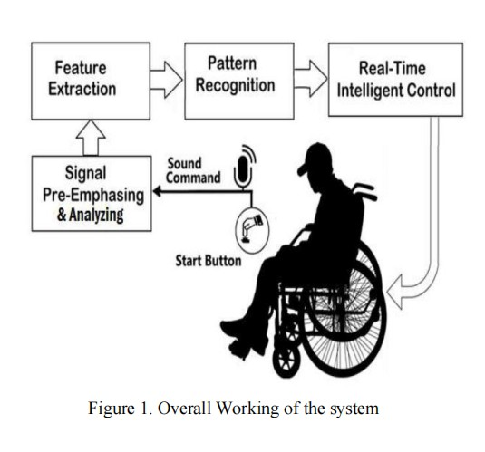

Dual-mode control using Voice and Hand Gestures. (Published in IJMTST Journal)
This project was developed as my final year academic project and was successfully **published in the International Journal for Modern Trends in Science and Technology (IJMTST)**. Below is the official system diagram from the paper.
Individuals with severe mobility impairments often depend on others for movement. While traditional joystick-controlled wheelchairs exist, they are not usable for everyone. The goal was to create an intuitive, hands-free control system to enhance user independence and accessibility.
I designed and developed a smart wheelchair prototype controlled by two distinct, non-invasive modes: real-time hand gestures and secure voice commands. This dual-mode system, built on a Raspberry Pi 3B+, provides flexibility and safety, allowing the user to select the control method that works best for them via a physical toggle switch.
The project was published in **IJMTST, Volume 9, Issue 04, April 2023**. Below are the official publication certificate and the system logic flowchart.
The entire system is powered by a Raspberry Pi 3B+ running a Linux OS, which serves as the central processing unit.